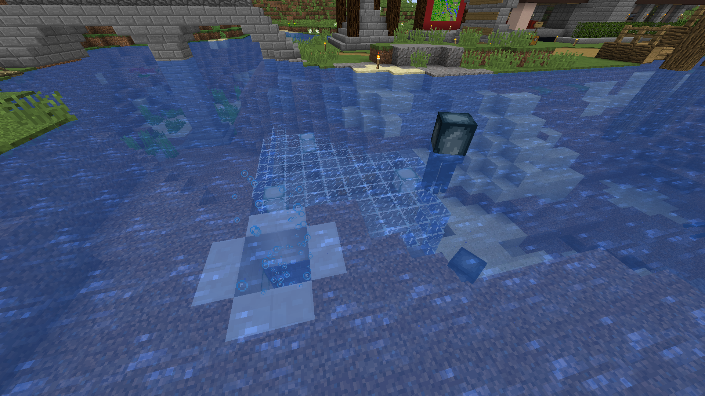

Kalles affär

Kalle hade en affär på servern där hans huvudvara var fyrverkerier. Rasmus var först med fyrverkeriförsäljningen, men på grund av materialbrist hade de väldigt högt pris. Kalle byggde därför en egen Creeperfarm som bland annat innehöll katter som han fick hämta ända från en djungel för att få farmen att funka, detta var ett stort problem för Kalle.Kalles affär
Kalle sålde också laxar i sin affär. Laxarna fick han från sin AFK-fiskefarm som han använde flitigt. Den gav honom utöver maten name-tags, böcker fiskespön och pilbågar.
Numera ligger affären under vattenytan i ån. Innan bodde affären på en båt som hade parkerat utanför i ån utanför Jacobs affär.